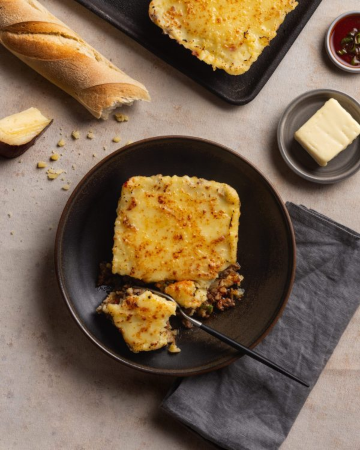
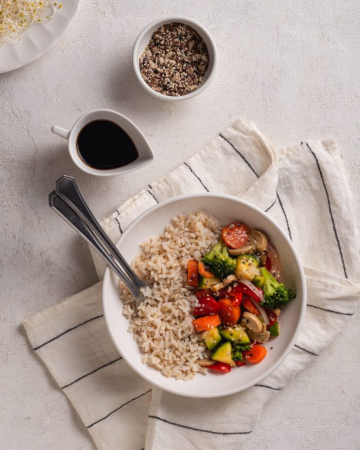
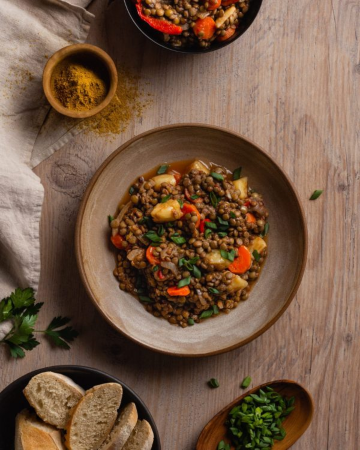
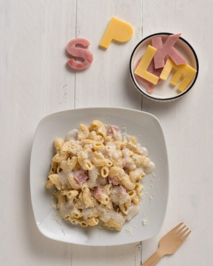

VIANDAS GOURMET
Esas comidas que te encanta comer, pero no cocinar. Más ricas de lo que podés imaginar.
Los paladares más exigentes se deleitan con las comidas gourmet caseras más deliciosas, preparadas con materias primas de alta calidad.
Disfrutá del sabor de platos elaborados de pasta, carne, pollo y cerdo sin ensuciar ni una cacerola con nuestras Viandas Gourmet.
Elegi tus platos Gourmet favoritos :
- Pastel de papa.
- Milanesa con papas a la española
- Costillitas de cerdo
VIANDAS LIGHT
¿Quién dijo que para cuidarse hay que pasar hambre? Una alternativa liviana y rica para tus comidas.
Encontrá los platos bajos en calorías más deliciosos, con una selección de ingredientes naturales que te ofrecen la posibilidad de disfrutar mientras cuidas tu figura.
Nuestro menú saludable de Viandas Light es ideal para quienes buscan llevar una vida sana pero no tienen tiempo ni ganas de pasar horas en la cocina.
Elegí tus platos light favoritos: :
- Mini tarta de zapallito.
- Canelones de ricota y espinaca
- Risoto de hongos


VIANDAS VEGANAS
Para quienes eligen una alimentación vegetariana o vegana, tanto por conciencia ambiental, protección de los animales o simplemente por gusto.
Platos a base de vegetales frescos y nutritivos, diseñados para aportar una proporción correcta de macro y micronutrientes, priorizando alimentos fuente de proteína vegetal.
Si buscás comidas vegetarianas saludables, encontrá una solución rica y súper fácil en nuestras Viandas Veggie.
Elegi tus platos Veggie favoritos :
- Guiso de lentejas veggie.
- Pastel de calabaza con base de lentejas
- Omelette de espinaca
VIANDAS KIDS
¿Te preocupa que la alimentación de tus hijos sea balanceada? ¿Estás buscando una comida saludable para los más chicos porque querés evitar los ultraprocesados?
Nuestras viandas saludables para niños vienen a resolverte todos los problemas.
Ofreceles platos deliciosos, nutritivos y muy prácticos de comida real, con los sabores que a ellos les encantan, para que crezcan fuertes y sanos.
Elegí tus platos KIDS favoritos: :
- Pechuguitas rellenas de jamón y queso con arroz.
- Milanesitas de pollo con papas fritas
- Pollito al horno con bombas de papa
